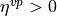

2. Simple shear of a 2D Cacuhy layer with Von-Mises yield criterion and Perzyna viscoplasticity¶
In this series of tutorials, we will validate the Cauchy, Perzyna viscoplasticity law available in Numerical Geolab. We will study three applications in order to evaluate the accuracy of the underlying material law and the capabilities of Numerical Geolab in applying different types of boundary conditions and materials Finally, we will showcase the flexibility of Numerical Geolab in running parametric analyses by simple modifications in the python script.
The three applications we will study are the following:
Application 1: Response comparizon in simple shear of a perfectly plastic, strain rate hardening, , 2D Cauchy layer under slow and fast shear strain rate.
Application 2: Shear relaxation of a 2D Cauchy layer, here we will apply an instantatenous bpoundary condition.
Application 3: Strain localization analysis for a strain softening, H<0, strain-rate hardening, , material.
Each application is separately described in the documentation: